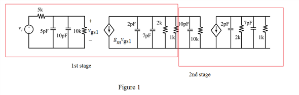

Observe from Figure 1 that the capacitors 5 pF and 10 pF are in parallel and the resistors  and are in parallel.
and are in parallel.
Determine the value of first pole frequency.
Therefore, the value of first pole frequency is .
Draw the equivalent circuit diagram.

Observe from Figure 1 that the capacitors 5 pF and 10 pF are in parallel and the resistors and are in parallel.
Determine the value of first pole frequency.
Therefore, the value of first pole frequency is .
Observe from Figure 1 that the capacitors 2 pF, 7 pF and 10 pF are in parallel and the resistors,  ,
, and
and  are in parallel.
are in parallel.
Determine the value of second pole frequency.
Therefore, the value of second pole frequency is.
Observe from Figure 1 that the capacitors 2 pF and 7 pF are in parallel and the resistors,  and are in parallel.
and are in parallel.
Determine the value of third pole.
Therefore, the value of third pole frequency is.
 is of much lower frequency than any of the other poles. So this pole effects on the value of amplifier. In other words, this pole dominates the high-frequency response of the amplifier, and the amplifier is said to have a dominant-pole response. If a dominant pole exists, then
is of much lower frequency than any of the other poles. So this pole effects on the value of amplifier. In other words, this pole dominates the high-frequency response of the amplifier, and the amplifier is said to have a dominant-pole response. If a dominant pole exists, then
Hence the value of 3-dB frequency is .